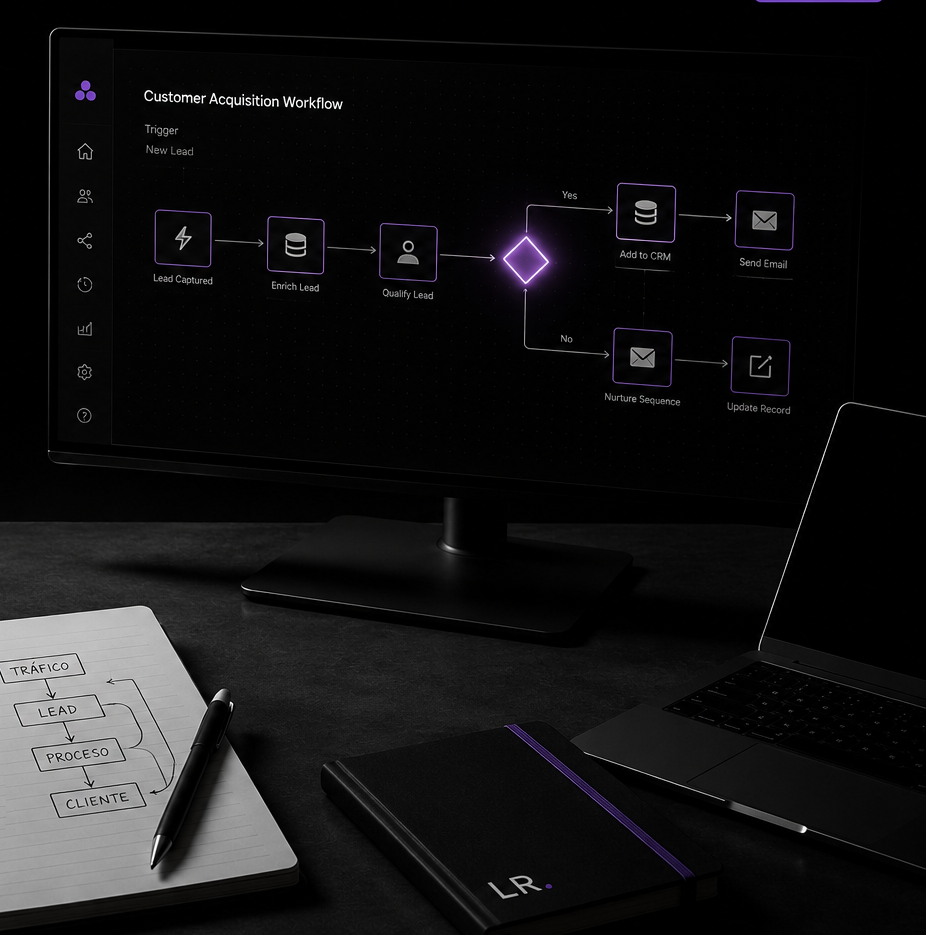
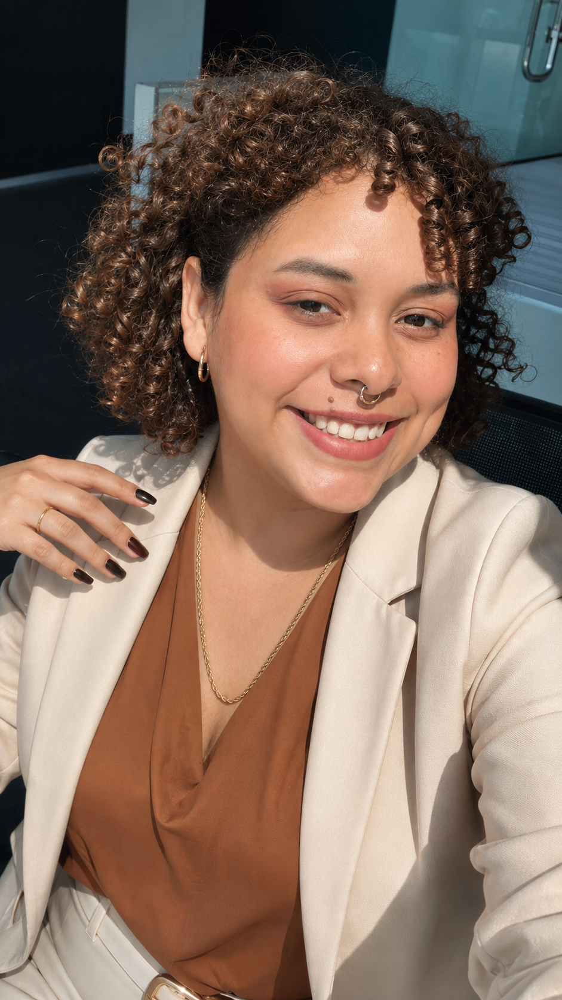

El interés disminuye mientras el cliente espera y termina hablando con otra empresa.
Growth Strategist · Panamá
Convierte más conversaciones en clientes.
Ayudo a empresas de servicios a responder más rápido, dar seguimiento a cada oportunidad y convertir más conversaciones en ventas utilizando estrategia, inteligencia artificial y automatización.
Una conversación estratégica. Sin compromiso y sin presentaciones genéricas.

Strategy · AI · Automation
Más oportunidades atendidas. Menos clientes olvidados.Sistemas diseñados alrededor de tu operación.
La realidad
La mayoría de las empresas no necesita más marketing.
Necesita dejar de perder las oportunidades que ya genera. Cuando una consulta tarda en responderse, no recibe seguimiento o queda dispersa entre Instagram, WhatsApp y una hoja de cálculo, el problema no es la demanda. Es el sistema.
Las oportunidades dependen de la memoria del equipo y no de un proceso claro.
Conversaciones, datos y próximas acciones viven en lugares distintos.
Lo que cambia
Resultados que se sienten en la operación.
No implemento tecnología por implementar. Diseño sistemas simples para que tu equipo trabaje mejor y cada oportunidad tenga una próxima acción.
Consigue más citas.
Convierte el interés inicial en una acción concreta y medible.
Responde más rápido.
Reduce tiempos de espera sin convertir tu atención en algo impersonal.
Recupera oportunidades.
Vuelve a contactar a quienes preguntaron, pero todavía no tomaron una decisión.
Elimina tareas repetitivas.
Automatiza lo predecible para que tu equipo se enfoque en vender y atender.
Cómo trabajaremos
De la fuga al sistema.
Un proceso claro, sin complejidad innecesaria y adaptado a la realidad de tu negocio.
01
Analizamos tu proceso
Reviso cómo llegan las consultas, quién responde, cuánto tarda el equipo y qué sucede después.
02
Encontramos las pérdidas
Identifico puntos de fricción, oportunidades olvidadas y tareas que frenan el crecimiento.
03
Implementamos mejoras
Construyo el flujo, los mensajes, las automatizaciones y las herramientas que realmente necesitas.
04
Medimos y optimizamos
Validamos qué funciona, corregimos lo necesario y dejamos un sistema que tu equipo puede utilizar.

Sobre Laura
Estrategia antes que herramientas.
Durante años he trabajado diseñando estrategias, automatizaciones y procesos para ayudar a empresas a crecer de forma más inteligente.
Con el tiempo descubrí que la mayoría de los negocios no tiene un problema de marketing. Tiene un problema de seguimiento, de procesos y de sistemas.
Hoy ayudo a empresas que reciben consultas por Instagram, WhatsApp y su página web a convertir más oportunidades en clientes mediante estrategia, inteligencia artificial y automatización.
Estrategia comercialAutomatizaciónInteligencia artificialMarketingGeneración de oportunidadesProcesos comerciales
“No vendo herramientas. Diseño sistemas que ayudan a empresas a crecer.”
Diagnóstico inicial
Descubramos dónde estás perdiendo clientes.
Cuéntame cómo llegan y se atienden tus consultas. Revisaremos tu proceso y te mostraré las mejoras con mayor impacto para tu negocio.
Hablar con Laura por WhatsApp ↗